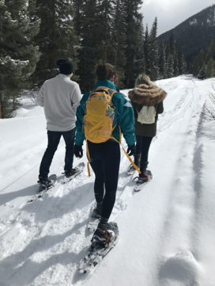
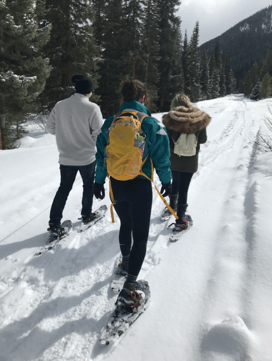
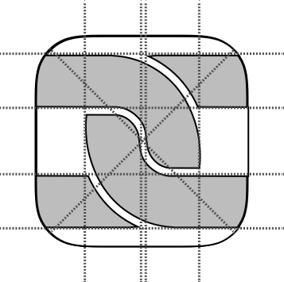
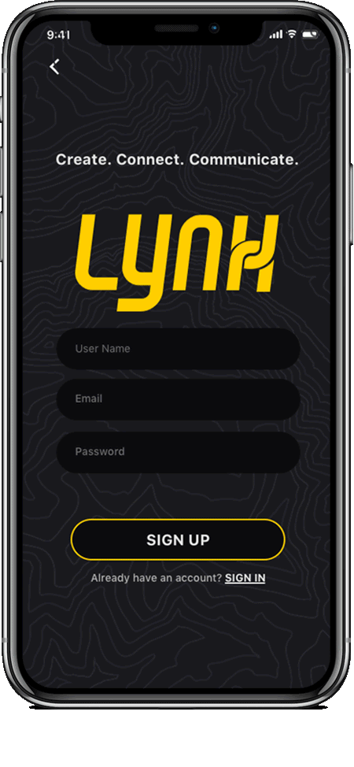
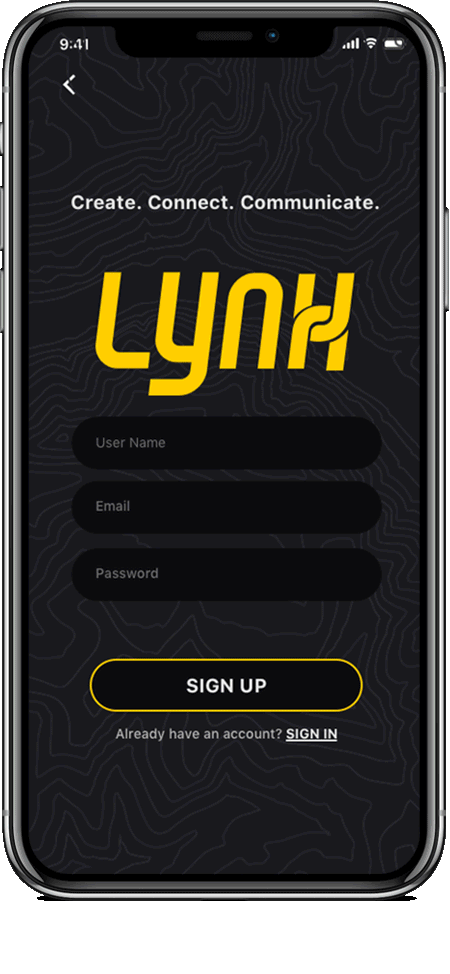

Lynx is a collaborative music sharing experience that integrates collaborative playlist creation, in sync real-time experience, and walkie talkie chat function.
Context
Graduate Project-Individual
Tools
Sketch, Principle, Photoshop, Illustrator, After Effects
Timeline
January-May 2019
Problem
Music apps typically curate music experiences towards the single user but fail to focus on the users. Music can curate a collaborative experience and is often missed through Spotify, Apple Music, Pandora and popular music streaming services.
Goal: To create an application that allows users to experience music together. To allow users to have a group speaker experience with friends through their individual headphones.
Solution: Lynx is a collaborative music sharing experience that integrates collaborative playlist creation, in sync real-time experience and walkie talkie chat communication function.
 

Research
For this project, I conducted a two-part ethnographic research study. The user test was done in multiple segments to test the different aspects and parts of the Lynx app. The first user test was conducted while snowshoeing and the second user test while skiing to duplicate the experience of the targeted audience.The first segment of the test was to have the users go about the experience as they normally would then interview them based upon that experience. The second segment of the test was to have a speaker playing music for the group then interview them on that portion. The next section was to imitate the experience of the app by creating a collaborative Spotify playlist and to sync the music by playing it from the beginning. The final step was to show them the prototype and talk them through the options and the likelihood that they would use each of the features.
Takeaways
I have tried to sync music with groups in the past while skiing and haven’t been able to.
I hate using speakers when hiking or outdoors as I don’t want to be that douchebag who forces everyone to listen to my type of music if they are trying to enjoy the outdoors.
I would definitely use this while at the gym, skiing or hiking.
During the two-phased study while snowshoeing and skiing with users, we conducted multiple aspects of the user experience. The first was an observation of the current systems the user used while doing the activities, a speaker used to share music collectively, test current apps on the market such as Spotify, and finally test the current Lynx Prototype. We conducted interviews with six participants to understand their perspectives on each of these systems and the proposed solution.
During this research, I found that most people thought that a collaborative music experience would heighten the activities tested and that the current market was not meeting this demand.
Pain points
Storyboard
This storyboard was created to visually predict the user scenario in which they would use this app. Being focused on outdoor adventure activities such as skiing, hiking, biking and more, design decisions such as when they have access to their phone, understanding the flow of the interaction and how the impact of such an application might have on their experience.
Our Users
Since this application is highly dependent on the activity for outdoor adventurous activities, I decided to take an alternative approach to the typical user personas. Focusing on the narrative of when and how the user is using this app led to many of the design decisions.
Wordmark
Customized font adapted from Air Americana font. This is a retro uppercase only italicized sans serif font designed in 2014 inspired by the Air Amerca Logo. The X is custom made to symbolize the links and connections the users have through the shared collaboration element of the app.
App Logo
The app logo plays off the wordmarks “X” symbolizing the links as a representation of chain links.
Low fidelity
Design Considerations
This research led the design process on focusing on the areas users thought was most beneficial to the user's experiences such as the collaborative playlist curation (create), sync and solo mode (connect) and the walkie talkie feature and chat function (communicate).
Create
One of the key takeaways from users was their desire for the ability to use this app without having to buy another music service. Based upon this research Lynx connects your current music apps to be able to collaboratively create playlists. In real-time, the user can create a playlist with their friends that share the music they love. Using this also allows the phone to download content before the activity to limit the data usage needed and save battery life, both pain points for the user.
Connect
For Lynx, the main feature is the Connect feature. This feature is the main experience that brings the speaker experience to the group through their individual headphones. Users can choose between Sync and Solo mode. Sync mode is through Bluetooth, cellular and wifi when available that keeps the user on the same music in real-time. Using the curated playlist from the group this feature allows everyone to have the shared collaborative music experience.
But in case of a user desiring to stay on the group playlist but can to customize what songs they are listening to when they have the option through the solo mode while still experiencing the music the group is, just at their own pace.
Navigation focused on swiping to allow easy access with limited attention to detail. See all important information quickly with one swipe.
Communicate
The final feature implemented based on user research is the communication tool. This tool has the Walkie talkie and chat function. When you slide to the left you are greeted with the chat feature to use voice notes or text, limiting the need for taking off your gloves or having it interfere with your activity. These features would also work with headphones to provide an even easier way for the user to be able to communicate. The user can choose to allow each voice memo to automatically pause their music and play the message through their headphones or mute these features to not interfere with their experience. While on mute the voice memos and chats are saved for when you want to catch up on the information your group has shared.
 
